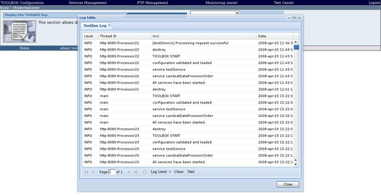
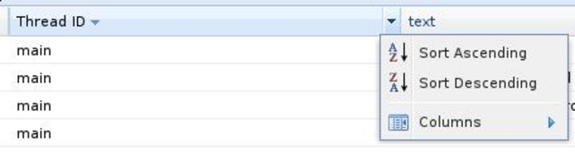
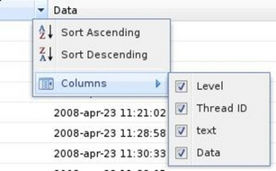

To display the TOOLBOX log file in a user-friendly view, click on the "Display the TOOLBOX log" section link in the "Monitoring center" page. The browser should display a window similar to the one reported below

The TOOLBOX log window allows selecting the log level. Five log level are foreseen:
By default the INFO level is selected. If you want to change it select the log level from the combo area.

A table showing the TOOLBOX log file entries corresponding to the selected level should displayed.
It is possbile sort the log entries for Level, Thread Id, Text or Data.

Also, It is possbile custumize the columns to visualize.
